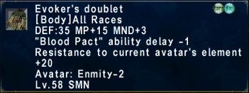

Evoker's Doublet

Statistics
Evoker's Doublet Rare · Exclusive
[Body] All Races
DEF: 35 MP +15 MND +3
"Blood Pact" ability delay -1
Resistance to current avatar's element +20
Avatar: Enmity -2
Lv. 58 SMN
[Body] All Races
DEF: 35 MP +15 MND +3
"Blood Pact" ability delay -1
Resistance to current avatar's element +20
Avatar: Enmity -2
Lv. 58 SMN
View the entire Evoker's Attire Set.
EmberXI changes
"Blood Pact" ability delay -1
Other Uses
| Source | Coffer in the Temple of Uggalepih — open it on Summoner, with Borghertz's Calling Hands active or completed |
|---|---|
| Artifact Armor Upgrade | Evoker's Doublet +1 — trade the piece to Brandt in Lower Jeuno with 4 Alexandrite |
| Resale Price | Cannot be sold to NPCs. |
How to Obtain
Cannot be auctioned, traded, bazaared, or delivered.
Quest
Last edited: 12 September 2026 · EmberXI Wiki